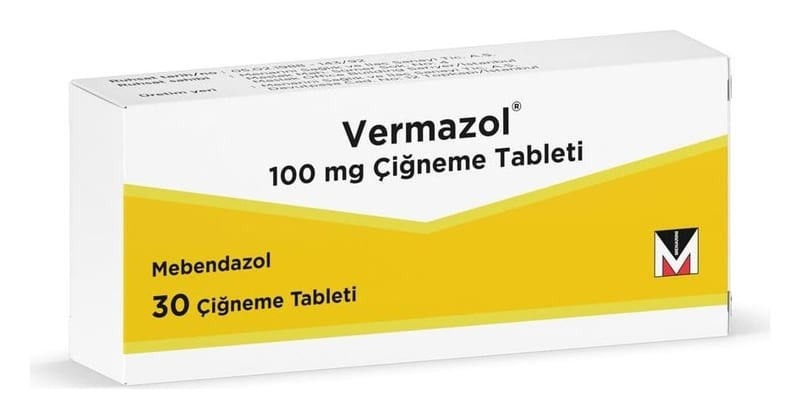

Vermazol 100 mg Çiğneme Tableti

Ne için kullanılır
KT · Bölüm 1VERMAZOL uçuk pembe renkli, yuvarlak, bikonveks tablettir. VERMAZOL 30 adet çiğneme tableti içeren blister ambalajlarda kutu içerisinde kullanıma sunulmaktadır. VERMAZOL antihelmentikler denilen ilaç grubuna aittir. VERMAZOL, aşağıda belirtilen bağırsak kurdu/solucanı enfeksiyonlarının tedavisinde kullanılmaktadır:
• Kıl kurdu (oksiyür) • Diğer yaygın bağırsak kurdu enfeksiyonları (kamçı kurdu , yuvarlak kurt, kancalı kurt ) VERMAZOL tablet, sizde veya çocuğunuzda bir bağırsak kurdu/solucanı enfeksiyonu söz konusu olduğu için reçete edilmiştir. Bağırsak kurtları/solucanları herkeste
enfeksiyona yol açabilir. Bu enfeksiyonun sizde var olması, hijyen kurallarına dikkat etmediğiniz anlamına gelmez .